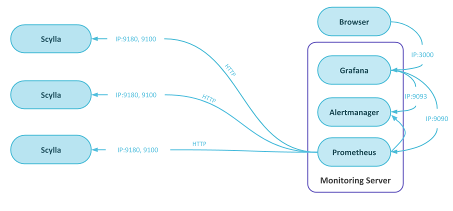

Was this page helpful?
Caution
You're viewing documentation for a previous version of ScyllaDB Monitoring. Switch to the latest stable version.
Alerting¶
Alerts are a Prometheus enhancement to notify that something is wrong in the system.
You can read more about Prometheus alerting here
By default, alerts are shown in the overview dashboard, but you can also configure the alerts to be sent to other external systems like email or slack.
In general, alerts are generated by Prometheus when a specific condition is met within a certain period of time, they are then sent to the Alertmanager, that can send them to external systems.
The Alertmanager also acts as a data source for Grafana so the active alerts are shown in the dashboard.
Prometheus Alerts¶
The Prometheus alerts are defined in the prometheus.rules.yml file that is located in the prometheus directory.
Each alert consists of:
Name
What happened
For how long
What to report
For example, let us look at the InstanceDown alert that comes by default as part of Scylla-Monitoring.
- alert: InstanceDown
expr: up == 0
for: 60s
labels:
severity: "2"
annotations:
description: '{{ $labels.instance }} has been down for more than 30 seconds.'
summary: Instance {{ $labels.instance }} down
The expr is a legal Prometheus expression, in this case, the up metric is equal to 0.
The for set the minimal duration before the alert will be active. Prior to that, the alert will be in pending-mode and will not be sent.
The labels part holds additional labels that will be added to the alert, in the example, the severity label will be set to 2.
annotations are special labels that add a description to the alert and can be used in emails and notification when the alert is forward to external systems.
Alertmanager¶
The Alertmanager gets the alerts from the Prometheus server responsible for duplicating, grouping and routing.
The Alertmanager configuration is found in rule_config.yml file that is located in the prometheus directory. The configuration consists of three parts:
Routes: Represent a routing tree, the most specific rule, wins
Inhibition: Mute an alert, based on another alert
Receiver: Send a notification via email, sluck, etc’
Check the Alertmanager documentation for details on how to specify a specific receiver.
In the default configuration, the Grafana server will use the Alertmanager as a data source for the alert table found in the overview dashboard.
Tips When Adding an Alert¶
It’s worse having an alert that does not work, than not having an alert at all
There are multiple ways you can use to make sure your alert is set correctly:
Start with making sure that the full path (alert to mail or dashboard) is working a simple way is by negating the logic.
Force the alert to be active by reducing the limits or the duration.
When possible simulate the actual scenario and see that the alert works as expected.
For example, low available disk space.
Assume that you want an alert when you have lower than 10% disk space. You can start by setting the alert that is fired when you have more than 10% disk space. That would show that the alert is active and is propagated to the dashboard and to any external system you are using. You can then set the alert rule to a value similar to the current situation.
Now you are sure that when setting the expression to alert when the free space below 10% the alert would work, but if possible, simulate that situation, in this case by creating some big files.
Starting with a simple working expression helps you bisect problems.